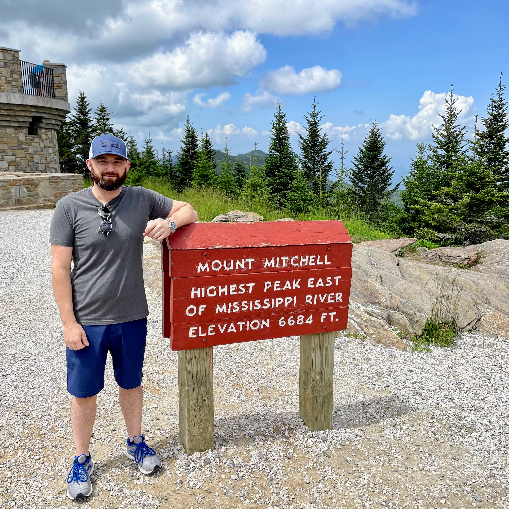

Brandon Skaggs

About
Contact
Summary
Dedicated IT Service Desk Professional with 5+ years of experience delivering
top-notch technical support and solutions to end-users in diverse
environments. Eager to leverage my skills and knowledge to contribute to a
dynamic IT team and provide reliable support to optimize IT operations.
Education
Kentucky Community & Technical College System
Associate of Science - Web Development
Work Experience
Mizkan America - Technician | Owensboro, Kentucky / 2019 - Present
Operate and troubleshoot complex industrial systems.
Operate HMI controls for industrial cooking systems.
Lab test product for quality standards and deviations.
Maintain high level food cleaning standards.
Maintain 5S standards.
Level Up Technologies - Owner | Owensboro, Kentucky / 2021 - Present
Provide technical support for computer and network hardware, software, and services.
Skilled at identifying root causes of technical issues and implementing practical solutions, improving system stability.
Excellent ability to communicate technical information clearly and provide friendly, patient, and effective support to users at all levels.
Quick learner with a proven ability to adapt to new technologies, procedures, and best practices in the ever-evolving IT field.
Level Up Pro Wash - Owner | Owensboro, Kentucky / 2021 - Present North American Mission Board - Project Leader | Henderson, Kentucky / 2011 - 2019
Project manager for numerous company projects and training programs.
Responsible for casting overall vision and mission for our local organization.
Oversaw associational teams for budget, grounds, and human resources.
Supervised two building renovation projects.
Supervised several company projects from conception to realization while managing teams, schedules, and budgets.
Led weekly in person communications meetings to our teams and leaders.
Communicated with tact and diplomacy with personnel and conflict resolution.
Magna - Production Supervisor | Bowling Green, Kentucky / 2007 - 2011
Supervised a team of twenty team members across three departments.
Led daily communication meetings with team members.
Gave yearly performance reviews and feedback to team members.
Hard Skills
HTML
Python
Office 365
JavaScript
Windows
Linus
Mac
TCP/IP
LAN/WAN
Soft Skills
Communication
Problem Solving
Leadership
Team Collaboration
Project Management
Awards and Certifications
PC Pro Certified | Test Out
Web Development Boot Camp | App Brewery - udemy.com
Python Bootcamp | App Brewery - udemy.com
Root Cause Analysis | Magna
Conflict Management | Magna
Diversity and Inclusion in the Workplace | Mizkan
© Brandon Skaggs. All Rights Reserved.